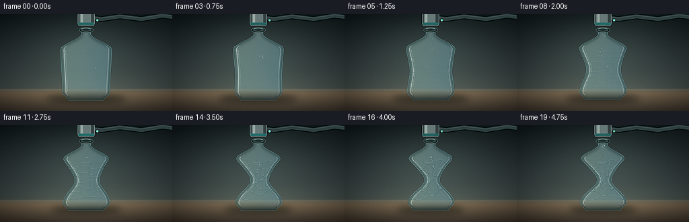
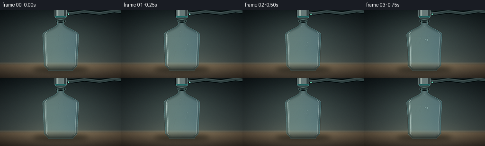

CODING AGENTS AS PIXEL WORLD MODELS
traex/DeepSeek-V4.1-Flash · phygen_016
点击播放 · 原生 RGB 像素
逐轮保存的候选
回放视频、检查图与代码变化。
每份候选均可单独播放。实际图片检查记录在下方工具轨迹中。
候选 01播放与检查图
点击播放 · 原生 RGB 像素

展开代码变化
--- 上一保存版本
+++ 本次保存版本
@@ -0,0 +1,423 @@
+from pathlib import Path
+import math
+
+import numpy as np
+from PIL import Image, ImageChops, ImageDraw, ImageFilter
+
+from artifact_io import save
+
+
+W, H = 256, 144
+N, FPS = 20, 4.0
+S = 4
+WS, HS = W * S, H * S
+CX = 128.0
+
+
+def smoothstep(edge0, edge1, value):
+ x = np.clip((value - edge0) / (edge1 - edge0), 0.0, 1.0)
+ return x * x * (3.0 - 2.0 * x)
+
+
+def bump(value, center, width):
+ return np.exp(-0.5 * ((value - center) / width) ** 2)
+
+
+def scaled(points):
+ return [(float(x) * S, float(y) * S) for x, y in points]
+
+
+def transparent_layer():
+ return Image.new("RGBA", (WS, HS), (0, 0, 0, 0))
+
+
+def clip_to_mask(layer, mask):
+ clipped = layer.copy()
+ clipped.putalpha(ImageChops.multiply(clipped.getchannel("A"), mask))
+ return clipped
+
+
+def make_background(frame):
+ yy, xx = np.mgrid[0:H, 0:W]
+ y = yy / (H - 1)
+ x = xx / (W - 1)
+
+ wall_top = np.array([23, 31, 34], dtype=float)
+ wall_horizon = np.array([62, 72, 72], dtype=float)
+ floor_horizon = np.array([105, 91, 73], dtype=float)
+ floor_bottom = np.array([61, 54, 47], dtype=float)
+
+ wall_t = np.clip(y / 0.79, 0.0, 1.0)[..., None]
+ wall = wall_top * (1.0 - wall_t) + wall_horizon * wall_t
+ floor_t = np.clip((y - 0.79) / 0.21, 0.0, 1.0)[..., None]
+ floor = floor_horizon * (1.0 - floor_t) + floor_bottom * floor_t
+ horizon_mix = smoothstep(0.755, 0.825, y)[..., None]
+ rgb = wall * (1.0 - horizon_mix) + floor * horizon_mix
+
+ glow = np.exp(
+ -0.5 * ((xx - 126.0) / 63.0) ** 2
+ -0.5 * ((yy - 63.0) / 46.0) ** 2
+ )
+ rgb += glow[..., None] * np.array([20.0, 24.0, 21.0])
+
+ pool = np.exp(
+ -0.5 * ((xx - 130.0) / 78.0) ** 2
+ -0.5 * ((yy - 116.0) / 15.0) ** 2
+ )
+ rgb += pool[..., None] * np.array([18.0, 15.0, 10.0])
+
+ # Fine table grain and a faint horizon line make the space feel physical.
+ grain = (
+ np.sin(xx * 2.71 + yy * 0.37)
+ + np.sin(xx * 0.91 - yy * 1.93)
+ + np.sin(xx * 5.17 + yy * 3.11)
+ ) * 0.65
+ rgb += grain[..., None] * (0.25 + 0.75 * smoothstep(0.72, 0.84, y))[..., None]
+ horizon = np.exp(-0.5 * ((yy - 112.0) / 0.75) ** 2)
+ rgb += horizon[..., None] * np.array([17.0, 15.0, 12.0])
+
+ vignette = 1.0 - 0.44 * (
+ ((xx - W * 0.52) / (W * 0.76)) ** 2
+ + ((yy - H * 0.49) / (H * 0.84)) ** 2
+ ) ** 1.25
+ rgb *= np.clip(vignette, 0.47, 1.0)[..., None]
+ image = Image.fromarray(np.clip(rgb, 0, 255).astype(np.uint8)).convert("RGB")
+ return image.resize((WS, HS), Image.Resampling.BICUBIC).convert("RGBA")
+
+
+def bottle_geometry(collapse):
+ v = np.linspace(0.0, 1.0, 220)
+ top = 21.5
+ base = 128.0 - 1.8 * collapse
+ y = top + v * (base - top)
+
+ shoulder = smoothstep(0.075, 0.29, v)
+ base_half = 6.8 + 31.0 * shoulder
+ base_half -= 2.8 * smoothstep(0.29, 0.88, v)
+ base_half -= 8.5 * smoothstep(0.89, 1.0, v)
+
+ waist = bump(v, 0.575, 0.142)
+ upper_buckle = bump(v, 0.365, 0.082)
+ lower_bulge = bump(v, 0.835, 0.085)
+ left_factor = (
+ 1.0
+ - collapse * (0.735 * waist + 0.115 * upper_buckle)
+ + collapse * 0.045 * lower_bulge
+ )
+ right_factor = (
+ 1.0
+ - collapse * (0.675 * waist + 0.165 * upper_buckle)
+ + collapse * 0.065 * lower_bulge
+ )
+ left_half = np.maximum(base_half * left_factor, 4.6)
+ right_half = np.maximum(base_half * right_factor, 4.6)
+
+ # A restrained lateral bend keeps the collapse from looking like a mirror.
+ center = CX + collapse * 1.1 * np.sin(np.pi * np.clip((v - 0.22) / 0.72, 0, 1))
+ left = center - left_half
+ right = center + right_half
+ return v, y, left, right, left_half, right_half
+
+
+def bottle_mask(v, y, left, right):
+ polygon = list(zip(left, y)) + list(zip(right[::-1], y[::-1]))
+ mask = Image.new("L", (WS, HS), 0)
+ ImageDraw.Draw(mask).polygon(scaled(polygon), fill=255)
+ return mask.filter(ImageFilter.GaussianBlur(0.45 * S)), polygon
+
+
+def draw_bottle(base, collapse, frame):
+ v, y, left, right, left_half, right_half = bottle_geometry(collapse)
+ mask, polygon = bottle_mask(v, y, left, right)
+
+ # Clear PET refracts a slightly displaced, softened version of the room.
+ shifted = ImageChops.offset(base.filter(ImageFilter.GaussianBlur(1.4 * S)), 2 * S, 0)
+ shifted.putalpha(72)
+ base.alpha_composite(Image.composite(shifted, transparent_layer(), mask))
+
+ yy, xx = np.mgrid[0:HS, 0:WS]
+ gy = yy / (HS - 1)
+ gx = xx / (WS - 1)
+ fill = np.zeros((HS, WS, 4), dtype=np.uint8)
+ fill[..., 0] = np.clip(171 - 55 * gy + 18 * np.cos((gx - 0.37) * math.pi * 3), 0, 255)
+ fill[..., 1] = np.clip(219 - 46 * gy + 11 * np.cos((gx - 0.37) * math.pi * 3), 0, 255)
+ fill[..., 2] = np.clip(224 - 40 * gy, 0, 255)
+ fill[..., 3] = 92
+ base.alpha_composite(Image.composite(Image.fromarray(fill, "RGBA"), transparent_layer(), mask))
+
+ glass = transparent_layer()
+ gd = ImageDraw.Draw(glass)
+ outline = scaled(polygon + [polygon[0]])
+ gd.line(outline, fill=(32, 78, 82, 175), width=max(2, int(1.5 * S)), joint="curve")
+ gd.line(outline, fill=(183, 235, 237, 105), width=max(1, int(0.55 * S)), joint="curve")
+
+ # Softbox reflections follow the changing side walls.
+ for side, strength, inset in ((left, 116, 5.0), (right, 74, 4.2)):
+ pts = []
+ for i in range(len(v)):
+ if 0.24 <= v[i] <= 0.94:
+ px = side[i] + inset if side is left else side[i] - inset
+ pts.append((px, y[i]))
+ if len(pts) > 2:
+ gd.line(scaled(pts), fill=(229, 252, 249, strength), width=max(1, int(1.45 * S)), joint="curve")
+
+ inner = []
+ for i in range(len(v)):
+ if 0.30 <= v[i] <= 0.88:
+ inner.append((left[i] + 7.2, y[i]))
+ if len(inner) > 2:
+ gd.line(scaled(inner), fill=(232, 253, 250, 38), width=max(1, int(1.1 * S)), joint="curve")
+
+ # Molded rings are faint while intact and become part of the folds.
+ for level, alpha in ((0.335, 26), (0.855, 20)):
+ idx = int(level * (len(v) - 1))
+ pts = [(left[idx] + 2.0, y[idx]), (right[idx] - 2.0, y[idx])]
+ gd.line(scaled(pts), fill=(39, 91, 94, alpha), width=max(1, int(0.65 * S)))
+
+ wrinkle = float(np.clip((collapse - 0.055) / 0.945, 0.0, 1.0))
+ levels = (0.335, 0.405, 0.475, 0.545, 0.615, 0.685, 0.755, 0.825)
+ for fold_index, level in enumerate(levels):
+ idx = int(level * (len(v) - 1))
+ fold_strength = wrinkle * (0.28 + 0.72 * bump(level, 0.58, 0.28))
+ if fold_strength < 0.025:
+ continue
+ pts = []
+ for frac in np.linspace(0.03, 0.97, 32):
+ px = left[idx] + frac * (right[idx] - left[idx])
+ wave = (
+ 1.1 * math.sin(frac * math.pi * (2.2 + fold_index * 0.08) + fold_index * 1.7)
+ + 0.7 * math.sin(frac * math.pi * 4.4 - fold_index)
+ )
+ wave *= fold_strength * (1.3 + 2.5 * collapse)
+ py = y[idx] + wave
+ pts.append((px, py))
+ gd.line(
+ scaled(pts),
+ fill=(22, 69, 73, int(105 * fold_strength)),
+ width=max(1, int(0.72 * S)),
+ joint="curve",
+ )
+ gd.line(
+ scaled([(px, py - 0.75) for px, py in pts]),
+ fill=(221, 249, 247, int(92 * fold_strength)),
+ width=max(1, int(0.45 * S)),
+ joint="curve",
+ )
+
+ # Two long diagonal buckles sell the sudden inward failure of the wall.
+ if collapse > 0.16:
+ for offset, phase in ((-0.38, 0.0), (0.18, 1.7), (0.52, 2.9)):
+ pts = []
+ for vv in np.linspace(0.31, 0.79, 34):
+ idx = int(vv * (len(v) - 1))
+ center = 0.5 * (left[idx] + right[idx])
+ half = 0.5 * (right[idx] - left[idx])
+ px = center + half * offset + 1.2 * math.sin(vv * 19.0 + phase)
+ py = y[idx] + 0.7 * math.sin(vv * 15.0 + phase)
+ pts.append((px, py))
+ gd.line(
+ scaled(pts),
+ fill=(20, 66, 70, int(48 * collapse)),
+ width=max(1, int(0.58 * S)),
+ joint="curve",
+ )
+
+ base.alpha_composite(clip_to_mask(glass, mask))
+
+ # A broad internal shadow gives the transparent shell volume.
+ edge = transparent_layer()
+ ed = ImageDraw.Draw(edge)
+ ed.line(outline, fill=(18, 53, 57, 135), width=max(2, int(3.3 * S)), joint="curve")
+ edge = edge.filter(ImageFilter.GaussianBlur(2.2 * S))
+ base.alpha_composite(clip_to_mask(edge, mask))
+
+ # Crisp outer rim after the soft edge.
+ rim = transparent_layer()
+ rd = ImageDraw.Draw(rim)
+ rd.line(outline, fill=(196, 242, 242, 118), width=max(1, int(0.65 * S)), joint="curve")
+ base.alpha_composite(rim)
+ return mask, v, y, left, right
+
+
+def draw_shadow(base, collapse, mask):
+ shadow = transparent_layer()
+ sd = ImageDraw.Draw(shadow)
+ width = 118.0 - 19.0 * collapse
+ height = 13.5 - 1.8 * collapse
+ box = ((CX - width / 2) * S, (126.0 - height / 2) * S,
+ (CX + width / 2) * S, (126.0 + height / 2) * S)
+ sd.ellipse(box, fill=(7, 12, 12, 132))
+ shadow = shadow.filter(ImageFilter.GaussianBlur(5.2 * S))
+ base.alpha_composite(shadow)
+
+ reflection = transparent_layer()
+ rmask = mask.resize((WS, HS))
+ tint = Image.new("RGBA", (WS, HS), (104, 183, 184, 31))
+ reflection = Image.composite(tint, reflection, rmask)
+ reflection = reflection.transform(
+ (WS, HS), Image.Transform.AFFINE, (1, 0, 0, 0, -0.16, 6 * S),
+ resample=Image.Resampling.BICUBIC,
+ )
+ reflection = reflection.filter(ImageFilter.GaussianBlur(2.2 * S))
+ reflection.putalpha(reflection.getchannel("A").point(lambda value: int(value * 0.38)))
+ base.alpha_composite(reflection)
+
+
+def quadratic(p0, p1, p2, steps=30):
+ q = np.linspace(0.0, 1.0, steps)[:, None]
+ p0 = np.asarray(p0, dtype=float)
+ p1 = np.asarray(p1, dtype=float)
+ p2 = np.asarray(p2, dtype=float)
+ return (1 - q) ** 2 * p0 + 2 * (1 - q) * q * p1 + q ** 2 * p2
+
+
+def draw_airflow(base, collapse, frame):
+ air = transparent_layer()
+ ad = ImageDraw.Draw(air)
+ phase_time = frame / FPS
+ strength = 0.52 + 0.48 * collapse + 0.06 * math.sin(phase_time * 8.0)
+ mouth_y = 23.0
+
+ for index in range(11):
+ angle = index * 2.39996
+ start_x = CX + math.sin(angle) * (5.0 + 18.0 * (1.0 - 0.72 * collapse))
+ start_y = 74.0 + ((index * 13) % 45) - collapse * 5.0
+ phase = (phase_time * (0.34 + 0.035 * index) + index * 0.113) % 1.0
+ control = (
+ start_x * 0.45 + CX * 0.55 + 5.5 * math.sin(angle + phase * 5.2),
+ (start_y + mouth_y) * 0.5,
+ )
+ path = quadratic((start_x, start_y), control, (CX + 1.2 * math.sin(angle), mouth_y), 40)
+ point_index = min(len(path) - 1, int(phase * (len(path) - 1)))
+ tail_index = max(0, point_index - 7)
+ segment = path[tail_index:point_index + 1]
+ alpha = int(68 * strength * math.sin(math.pi * phase) ** 0.6)
+ if len(segment) > 1:
+ ad.line(
+ scaled([tuple(p) for p in segment]),
+ fill=(171, 240, 240, alpha),
+ width=max(1, int(0.45 * S)),
+ )
+ px, py = path[point_index]
+ radius = (0.55 + 0.28 * math.sin(index * 1.7)) * S
+ ad.ellipse((px * S - radius, py * S - radius, px * S + radius, py * S + radius),
+ fill=(212, 253, 250, int(150 * strength)))
+
+ # Wisps curl around the nozzle, showing that the bottle is under suction.
+ for index in range(4):
+ phase = (frame / 19.0 * 1.8 + index / 4.0) % 1.0
+ yy = 18.0 - 13.0 * phase
+ xx = CX + math.sin(phase * math.pi * 2.0 + index * 1.4) * (4.5 + 3.0 * phase)
+ ad.arc(
+ ((xx - 3.3) * S, (yy - 2.4) * S, (xx + 3.3) * S, (yy + 2.4) * S),
+ start=20 + index * 40,
+ end=250 + index * 20,
+ fill=(160, 238, 235, int(70 * strength)),
+ width=max(1, int(0.45 * S)),
+ )
+
+ base.alpha_composite(air.filter(ImageFilter.GaussianBlur(0.35 * S)))
+
+
+def rounded_rectangle(draw, box, radius, fill, outline=None, width=1):
+ draw.rounded_rectangle(tuple(round(value * S) for value in box), radius=round(radius * S),
+ fill=fill, outline=outline, width=round(width * S))
+
+
+def draw_nozzle(base, frame, collapse):
+ layer = transparent_layer()
+ draw = ImageDraw.Draw(layer)
+
+ # Flexible extraction hose leaves the frame to imply an external pump.
+ hose = [(CX + 7, 5.0), (151, 7.0), (178, 3.0), (210, 7.0), (241, 2.0), (266, 5.0)]
+ draw.line(scaled(hose), fill=(12, 22, 23, 255), width=9 * S, joint="curve")
+ draw.line(scaled(hose), fill=(49, 65, 66, 255), width=6 * S, joint="curve")
+ draw.line(scaled([(x, y - 1.2) for x, y in hose]), fill=(122, 143, 143, 145),
+ width=max(1, int(0.8 * S)), joint="curve")
+
+ rounded_rectangle(draw, (CX - 12.5, -3.0, CX + 12.5, 17.5), 4.0,
+ (55, 68, 69, 255), (155, 179, 177, 210), 0.75)
+ rounded_rectangle(draw, (CX - 10.0, -2.0, CX + 7.0, 16.0), 3.2,
+ (102, 120, 120, 255))
+ rounded_rectangle(draw, (CX - 8.2, -1.0, CX - 5.0, 14.8), 1.2,
+ (194, 214, 208, 180))
+
+ # Cyan pressure ring and a small pulsing status light.
+ pulse = 0.62 + 0.38 * math.sin(frame / FPS * math.pi * 2.4)
+ rounded_rectangle(draw, (CX - 12.0, 12.5, CX + 12.0, 15.7), 1.2,
+ (43, 121, 119, int(170 + 45 * pulse)))
+ draw.ellipse(((CX + 15.0) * S, 7.5 * S, (CX + 18.2) * S, 10.7 * S),
+ fill=(122, 246, 212, int(150 + 85 * pulse)))
+
+ # Thick rubber collar seals the bottle mouth around the metal nozzle.
+ draw.ellipse(((CX - 10.5) * S, 19.7 * S, (CX + 10.5) * S, 27.6 * S),
+ fill=(13, 30, 31, 255), outline=(91, 115, 113, 220),
+ width=max(1, int(0.8 * S)))
+ draw.ellipse(((CX - 8.2) * S, 20.7 * S, (CX + 8.2) * S, 25.5 * S),
+ fill=(37, 53, 53, 255), outline=(143, 170, 165, 135),
+ width=max(1, int(0.55 * S)))
+ draw.arc(((CX - 7.2) * S, 20.9 * S, (CX + 7.2) * S, 24.9 * S),
+ start=205, end=335, fill=(177, 232, 222, 155), width=max(1, int(0.55 * S)))
+
+ # Small vibration accents during the forceful middle of the event.
+ shake = collapse * (1.0 - collapse) * 4.0
+ if shake > 0.18:
+ for index in range(3):
+ yy = 16.5 + index * 2.1
+ draw.line(((CX - 16.0) * S, yy * S,
+ (CX - 13.0 - 2.0 * shake) * S, (yy + 0.4) * S),
+ fill=(170, 230, 224, int(42 * shake)), width=max(1, int(0.4 * S)))
+ draw.line(((CX + 16.0) * S, yy * S,
+ (CX + 13.0 + 2.0 * shake) * S, (yy + 0.4) * S),
+ fill=(170, 230, 224, int(42 * shake)), width=max(1, int(0.4 * S)))
+
+ base.alpha_composite(layer)
+
+
+def bloom_and_grade(image, frame):
+ rgb = np.asarray(image.convert("RGB"), dtype=np.float32) / 255.0
+ luminance = rgb.max(axis=2)
+ highlights = np.clip((luminance - 0.62) / 0.38, 0.0, 1.0)
+ glow = Image.fromarray((highlights * 255).astype(np.uint8), "L")
+ glow = glow.filter(ImageFilter.GaussianBlur(4.0 * S))
+ glow_arr = np.asarray(glow, dtype=np.float32)[..., None] / 255.0
+ rgb = 1.0 - (1.0 - rgb) * (1.0 - 0.22 * glow_arr)
+
+ # Slight warm/cool separation and filmic contrast.
+ rgb = np.clip((rgb - 0.5) * 1.055 + 0.5, 0.0, 1.0)
+ rgb[..., 0] *= 1.015
+ rgb[..., 1] *= 1.006
+ rgb[..., 2] *= 0.992
+ rng = np.random.default_rng(1200 + frame)
+ grain = rng.normal(0.0, 0.0065, (HS, WS, 1)).astype(np.float32)
+ rgb = np.clip(rgb + grain, 0.0, 1.0)
+ return Image.fromarray((rgb * 255.0 + 0.5).astype(np.uint8), "RGB")
+
+
+def render_frame(frame):
+ u = frame / (N - 1)
+ collapse = float(smoothstep(0.055, 0.94, u) ** 0.82)
+ collapse += 0.014 * math.sin(u * math.pi * 8.0) * math.sin(math.pi * u)
+ collapse = float(np.clip(collapse, 0.0, 1.0))
+
+ base = make_background(frame)
+ mask, _, _, _, _ = draw_bottle(base, collapse, frame)
+ draw_shadow(base, collapse, mask)
+ draw_airflow(base, collapse, frame)
+ draw_nozzle(base, frame, collapse)
+
+ graded = bloom_and_grade(base, frame)
+ small = graded.resize((W, H), Image.Resampling.LANCZOS)
+ small = small.filter(ImageFilter.UnsharpMask(radius=0.75, percent=82, threshold=2))
+ return np.asarray(small, dtype=np.uint8)
+
+
+def main():
+ case_dir = Path(__file__).resolve().parent
+ frames = np.stack([render_frame(frame) for frame in range(N)], axis=0)
+ save(frames, case_dir)
+ print(f"wrote {N} frames to {case_dir}")
+
+
+if __name__ == "__main__":
+ main()
候选 02播放与检查图
点击播放 · 原生 RGB 像素

展开代码变化
--- 上一保存版本
+++ 本次保存版本
@@ -132,7 +132,7 @@
# Clear PET refracts a slightly displaced, softened version of the room.
shifted = ImageChops.offset(base.filter(ImageFilter.GaussianBlur(1.4 * S)), 2 * S, 0)
- shifted.putalpha(72)
+ shifted.putalpha(47)
base.alpha_composite(Image.composite(shifted, transparent_layer(), mask))
yy, xx = np.mgrid[0:HS, 0:WS]
@@ -142,7 +142,8 @@
fill[..., 0] = np.clip(171 - 55 * gy + 18 * np.cos((gx - 0.37) * math.pi * 3), 0, 255)
fill[..., 1] = np.clip(219 - 46 * gy + 11 * np.cos((gx - 0.37) * math.pi * 3), 0, 255)
fill[..., 2] = np.clip(224 - 40 * gy, 0, 255)
- fill[..., 3] = 92
+ side_glow = np.exp(-0.5 * ((gx - 0.31) / 0.18) ** 2)
+ fill[..., 3] = np.clip(27 + 25 * side_glow + 8 * np.cos(gx * math.pi * 2), 20, 68)
base.alpha_composite(Image.composite(Image.fromarray(fill, "RGBA"), transparent_layer(), mask))
glass = transparent_layer()
@@ -160,6 +161,16 @@
pts.append((px, y[i]))
if len(pts) > 2:
gd.line(scaled(pts), fill=(229, 252, 249, strength), width=max(1, int(1.45 * S)), joint="curve")
+
+ # Fine vertical ribs and a second reflected softbox read as molded PET.
+ for frac, alpha in ((0.24, 34), (0.38, 25), (0.73, 30)):
+ pts = []
+ for i in range(len(v)):
+ if 0.28 <= v[i] <= 0.92:
+ pts.append((left[i] + frac * (right[i] - left[i]), y[i]))
+ if len(pts) > 2:
+ gd.line(scaled(pts), fill=(226, 253, 249, alpha),
+ width=max(1, int(0.46 * S)), joint="curve")
inner = []
for i in range(len(v)):
@@ -401,8 +412,10 @@
collapse = float(np.clip(collapse, 0.0, 1.0))
base = make_background(frame)
- mask, _, _, _, _ = draw_bottle(base, collapse, frame)
+ v, y, left, right, _, _ = bottle_geometry(collapse)
+ mask, _ = bottle_mask(v, y, left, right)
draw_shadow(base, collapse, mask)
+ draw_bottle(base, collapse, frame)
draw_airflow(base, collapse, frame)
draw_nozzle(base, frame, collapse)
候选 03播放与检查图
可观测工具轨迹
实际执行的命令与返回图片。
命令 1exit 0
/bin/bash -c "pwd && rg --files -g 'prompt.txt' -g 'GENERATION_RULES.md' -g 'task_spec.json' -g '"'!**/.git/**'"'"
命令 2exit 0
/bin/bash -c "find . -maxdepth 2 -type f -not -path './.git/*' -printf '%p\\n' | sort | head -200"
命令 3exit 0
/bin/bash -c 'git status --short --branch'
命令 4exit 0
/bin/bash -c 'cat prompt.txt'
命令 5exit 0
/bin/bash -c 'cat GENERATION_RULES.md'
命令 6exit 0
/bin/bash -c 'cat task_spec.json'
命令 7exit 0
/bin/bash -c "sed -n '1,240p' artifact_io.py && sed -n '1,200p' player_template.html"
命令 8exit 1
/bin/bash -c 'python generate.py'
命令 9exit 0
/bin/bash -c "python - <<'PY' from generate import * base=make_background(0) v,y,l,r,lh,rh=bottle_geometry(0) mask,poly=bottle_mask(v,y,l,r) shifted=ImageChops.offset(base.filter(ImageFilter.GaussianBlur(1.4*S)),2*S,0) print(base.mode,base.size,shifted.mode,shifted.size,transparent_layer().mode,transparent_layer().size,mask.mode,mask.size) PY"
命令 10exit 0
/bin/bash -c 'python generate.py'
命令 11exit 0
/bin/bash -c "python - <<'PY'
from PIL import Image
im=Image.open('inspection.png')
print(im.size)
PY
ls -lh inspection.png transition_check.png pixels.npz index.html frames/00.png frames/19.png"命令 12exit 0
/bin/bash -c "python - <<'PY'
from PIL import Image, ImageOps
import numpy as np
chars=' .,:;irsXA253hMHGS#9B&@'
for fi in [0,4,8,12,16,19]:
im=Image.open(f'frames/{fi:02d}.png').convert('L').resize((64,36))
a=np.array(im)
# local contrast for readable structure
a=np.clip((a-18)*1.7,0,255)
print(f'\\nFRAME {fi}')
for row in a[::2]:
print(''.join(chars[min(len(chars)-1,int(v/256*len(chars)))] for v in row))
PY"命令 13exit 0
/bin/bash -c 'command -v chafa || command -v viu || command -v jp2 || command -v img2txt || true'
命令 14exit 0
/bin/bash -c "python - <<'PY'
from PIL import Image
import numpy as np
for f in [0,10,19]:
a=np.array(Image.open(f'frames/{f:02d}.png'))
print(f, a.shape, a.dtype, a[0,:10].mean(0),a[0].min(0),a[0].max(0),a[:,0].min(0),a[:,0].max(0))
print('corners', a[0,0],a[0,-1],a[-1,0],a[-1,-1], 'center',a[70,128])
PY"命令 15exit 0
/bin/bash -c "python - <<'PY'
from PIL import Image
import numpy as np
chars=' .,:;irsXA253hMHGS#9B&@'
for fi in [0,19]:
im=Image.open(f'frames/{fi:02d}.png').convert('L').crop((35,15,225,140)).resize((72,38))
a=np.array(im)
a=np.clip((a-15)*1.65,0,255)
print(f'\\nFRAME {fi} crop')
for row in a:
print(''.join(chars[min(len(chars)-1,int(v/256*len(chars)))] for v in row))
PY"命令 16exit 1
/bin/bash -c 'python generate.py'
命令 17exit 0
/bin/bash -c 'python generate.py'
命令 18exit 0
/bin/bash -c "git status --short -- . ':"'!../../../../../../../../research/RSI_DEVELOPMENT.md'"' ':"'!../../../../../../../../tools/build_rsi_comparison.py'"' ':"'!../../../../../../../../docs/PHYSICS_BENCHMARK_CANDIDATES.md'"' ':"'!../../../../../../../../docs/RUNTIME_BUDGET.md'"' ':"'!../../../../../../../../docs/TOKEN_BUDGET_RECOMMENDATION.md'"'"
命令 19exit 0
/bin/bash -c "python - <<'PY'
from pathlib import Path
from PIL import Image
import numpy as np, json
frames=sorted(Path('frames').glob('*.png'))
a=np.stack([np.asarray(Image.open(p).convert('RGB')) for p in frames])
print('frames',len(frames),'shape',a.shape,'dtype',a.dtype)
print('value range',int(a.min()),int(a.max()),'mean',round(float(a.mean()),2))
diff=np.abs(a[1:].astype(np.int16)-a[:-1].astype(np.int16)).mean((1,2,3))
print('mean interframe diff',np.round(diff,3).tolist())
print('changed pixels per transition',[int((a[i]"'!=a[i-1]).any(2).sum()) for i in range(1,len(a))])
z=np.load('"'pixels.npz')['pixels']
print('pixels.npz',z.shape,z.dtype,'unique colors',len(np.unique(z)))
print('html bytes',Path('index.html').stat().st_size)
print('required',all(Path(p).exists() for p in ['generate.py','pixels.npz','index.html','inspection.png','transition_check.png']))
PY"命令 20exit 0
/bin/bash -c "python -m py_compile generate.py artifact_io.py && python - <<'PY'
import numpy as np
from generate import bottle_geometry
for f in [0,4,8,12,16,19]:
c=float(np.clip((f/19)**0.82,0,1))
v,y,l,r,_,_=bottle_geometry(c)
idx=int(.58*(len(v)-1))
print(f, 'nominal_collapse',round(c,3),'waist_width',round(float(r[idx]-l[idx]),1),'base_width',round(float(r[-1]-l[-1]),1))
PY"命令 21exit 0
/bin/bash -c "find . -maxdepth 2 -type f -not -path './__pycache__/*' -printf '%P %s bytes\\n' | sort"
保存候选 3 份；完成命令 21 次；可验证图片返回 0 张。原始 API 响应与完整日志保留在本地。